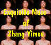
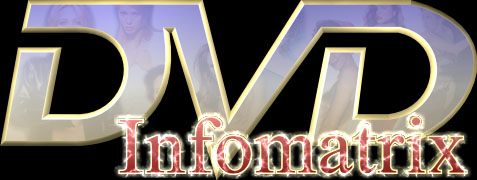

DVD Review Archive
Feature Archive Links DVD MIA DVD
Alerts Movie Posters Laser Site Info Home E-mail
© 2002 Films on Disc Stuart J. Kobak ALL RIGHTS RESERVED.
|
|
|
1939 Vintage By Stu Kobak Arguably the finest year of Hollywood movie making, 1939 produced an astounding number of quality films that have stood the test of time. Gone with the Wind (click for more) was the big winner come Oscar time, but any year that includes three of my very favorite films has got to be something special. The Wizard of Oz(click for more), Mr. Smith Goes to Washington (click for more) and Gunga Din were all part of that 1939 vintage. These are films that helped make me a movie lover. Each comes close to perfection. And like a classic vintage wine, these are films that improve with age, exposing layers of sophistication as time mingles with the basic beauty. The year 1939 was surely bountiful. Films like Beau Geste brought action audiences to the edge of their seats and Babes in Arms teamed Mickey Rooney and Judy Garland in one of the great "Let’s put on as show" movies. The excellent Confessions of a Nazi Spy took the gun out of Edward G. Robinson’s hand and gave him a pen instead. And Bette Davis broke hearts in Dark Victory, Marlene Dietrich taught James Stewart a thing or two about being a cowboy in the terrific western spoof, Destry Rides Again. Errol Flynn romped through Dodge City in Michael Curtiz’s wonderful western, and Henry Fonda outran the Indians under the loving eye of Claudette Colbert in John Ford’s towering revolution/western Drums Along the Mohawk(click for more). Tyrone Power and Henry Fonda carved out the myth of Jesse James for movie fans. John Steinbeck’s Of Mice and Men gave Burgess Meredith and Lon Chaney, Jr. a chance for a bit of screen immortality with a fine translation of the novel to screen. John Ford gave John Wayne his first defining screen role as The Ringo Kid in Stagecoach. That’s right, all those terrific movies in one year! Wouldn’t it be great if 1999 produced a fraction of the greatness. But 1939 didn’t just stop there. William Holden juggled boxing gloves, a violin, and Barbara Stanwyck all in one movie, Golden Boy and Robert Donut created the timeless portrait of a dedicated schoolmaster in Goodbye Mr. Chips. Cary Grant, Douglas Fairbanks, Jr. and Victor McLaglen battle against an Indian cult at the height of Britain’s Imperial rule of India. George Stevens directed the rousing Gunga Din with perfect timing and amazing enthusiasm. A defining cinema movie.! Carol Lombard and James Stewart made eyes at each other in the romantic weeper, Made for Each Other and James Stewart teamed up with Jean Arthur in one of the greatest movies ever made,
Frank Capra’s Mr. Smith Goes to Washington. Luminous Jean Arthur got a crack at Cary Grant in the atmospheric Howard Hawks drama, Only Angels Have Wings. And Cagney and Bogart battled for mob immortality in the terrific Raoul Walsh directed The Roaring Twenties. George Cukor directed the wonderfully droll
comic backbiting of The Women. William Wyler directed the Sam Goldwyn production of Wuthering Heights starring Sir Laurence Olivier and Merle Oberon and Henry Fonda gave the most convincing screen interpretation of Abraham Lincoln in John Ford’s Young Mr. Lincoln. Billy Wilder penned his first great comedy Ninotchka starring Greta Garbo and Melvin Douglas under the baton of
director Ernst Lubitsch. And Charles Laughton donned the hump for The Hunchback of Notre Dame, taking on the twisted chores performed by Lon Chaney in the silent version. England joined in the vintage celebration with the adventure saga Four Feathers.
1939 is a vintage to sample year after year. There are so many fine movies that will linger in your memory and stimulate your tastes for the best that Hollywood can produce. Come back and take a sip. |
The Exquisite Muse of Zhang Yimou  The Movie Poster Archive includes extensive poster images from the films of stars like Susan Hayward, Kirk Douglas, Katharine Hepburn and many more. Our featured star is Kirk Douglas.

culturevulture.net ReelUniverse.com is the home of the true Indies. You will find links to many independent filmmakers selling VHS copies of their films that have not yet gotten commercial release. None of the filmmakers represented on the site have DVD product available, but here's hoping.
|